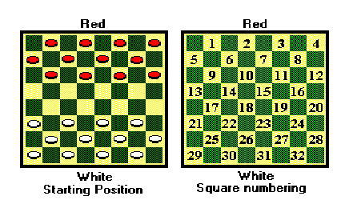

The game of checkers is played on an 8 by 8 red-black board using alternate squares. Two players (Red and White) each start with 12 pieces which are set up in the starting position shown below:

Rules for movement and capture are as follows (Note: a forward move is one in which a piece moves towards the opponent's side of the board):
1. Players alternate moves.
2. A piece may move one square forward diagonally to any empty square.
3. A piece may jump forward over an opposing player's piece if the opposing piece is adjacent to the piece and the square directly beyond the opposing piece is empty. After a jump, the opposing piece is removed from the board (captured). If after a jump, the jumping piece can make another jump, it must do so. This continues until it can make no other jumps. This is called a multiple jump.
4. A player must make a jump if possible. If several jumps are possible, the player may choose any, even choosing a single jump over a multiple jump. (However, if a multiple jump is chosen, it must be completed.)
5. The last row on the opponent's side of the board (the row where the piece can make no more forward moves) is the player's promotion row. When a piece reaches the promotion row it is promoted to a king and may now move and capture backward as well as forward. Once a piece is promoted, its move ends-it cannot start to jump or continue a multiple jump after becoming a king until the next turn.
6. A piece may be jumped at most once during a move (only a consideration when a king is doing the jumping).
Games are recorded using the square numbering shown above. For example, a simple forward move for White might be 22-18; a single jump for Red might be 14{23 (capturing a White piece at square 18); and a multiple jump for a White king might be 22-31-24-15 (capturing Red pieces at 26, 27 and 19).
For this problem, you will be given a position of a game in progress and a set of moves to be applied starting at that position, and you must determine if all the moves are legal by writing an Advanced Checkers Machine.
Input will consist of multiple problem instances. Each instance will start with two integers r and w, indicating the number of Red and White pieces on the board (values of r = w = 0 indicates end of input, otherwise 1 <= r; w <= 12). The next line will contain r square numbers indicating the Red piece positions and the next line will contain w square numbers for the White piece positions. Positive square values will indicate that a normal piece lies on that square, while a negative value -sq will indicate that a promoted piece lies on square sq. The next line will contain a single integer m >= 1 indicating the number of moves to make, followed by a space and then a single character (either R or W) indicating whose move it is. The next m lines will contain the m moves, using the notation described above. (You may assume that there are no more than 13 square numbers listed in any one move.)
All board positions will be legal positions (e.g., there will never be two pieces occupying the same square). You may assume that pieces that have advanced to their promotion row are indeed promoted; that is, there will be no pieces on their promotion row that are not kings.
For each problem instance, output either All moves valid or Move n is invalid, where n=1 corresponds to the firrst move in the problem instance. If there are multiple illegal moves, you should list only the first such move.
4 3 6 7 8 -16 9 18 19 3 W 9-2 16-23-14 2-11-4 4 3 6 10 15 19 18 22 23 6 R 19-26 18-11 10-14 22-18 6-10 10-15 0 0
All moves valid Move 5 is invalid